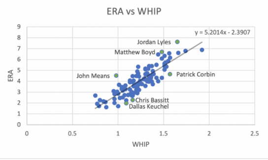
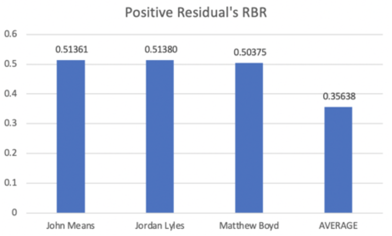
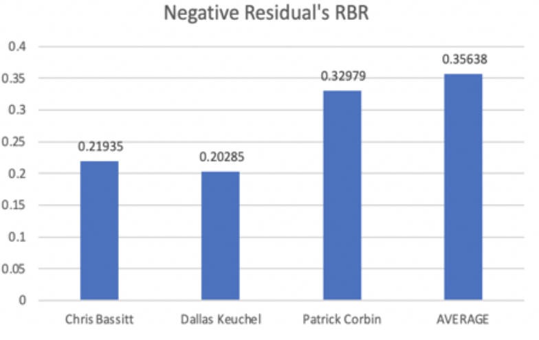

RBR: A Statistical Summary of Pitching With Runners on Base
By Josh Richland | November 29, 2020

In an ideal outing, a pitcher allows zero base runners and zero runs. However, when they do encounter trouble and the opponent starts a rally, the success of a pitcher is primarily reflected through two statistics: ERA (earned run average) and WHIP (walks and hits per inning pitched). Assuming these metrics are positively associated, meaning, as ERA increases WHIP will increase as well, pitchers whose numbers fall further from a line of best fit can reveal interesting information.
Creating a scatter plot of ERA versus WHIP can help to visualize which pitchers stray from this correlation. The primary focus of this graph is to provide insight into how effective the athletes are in preventing or surrendering runs, once opposing players reach the base path. Players with the largest absolute residuals, difference between the observed and expected values, would highlight those whose ERA is most different than what is predicted based on the trend-line. Data points that fall farther beneath the line correspond to pitchers who have success in limiting damage, while the higher a point is above the line represents a pitcher who typically allows base runners to score. This plot, takes all 106 starting pitchers from the 2020 season who have logged more than 40 innings pitched:
The pitchers with the largest residuals in the positive direction are Matthew Boyd (DET), Jordan Lyles (TEX), and John Means (BAL). The trend line indicates that their theoretical ERA per WHIP is significantly lower than the ERA they actually have. These pitchers are statistically poor when it comes to preventing runners from scoring. The opposite is evident for pitchers Patrick Corbin (WAS), Chris Bassit (OAK), and Dallas Keuchel (CWS).
This information can be used to calculate a new metric, “Runs per Base Runner”, or RBR. RBR is meant to quantify the number of runs each player on the base path accounts for (a pitcher with a lower RBR is statistically better). The formula for RBR is, (ERA/9)/(WHIP), which simplifies to (ER)/(BB+H). The average RBR for this sample size of starting pitchers is approximately 0.356. Again, this model suggests that for every runner the average pitcher allows to reach base, they account for about 0.356 runs, or 35.6% of a run. The RBRs for the selected outliers can be viewed comparatively to the league average in the following visuals:
 As expected, higher RBR pitchers are associated with positive residuals on the “ERA vs WHIP” scatter plot. Their baserunners account for over 15% more of a run than the league average. The negative residuals have similar results in the opposite direction: they surrender almost 15% less runs per base runner than the mean. Patrick Corbin obviously illustrates a different case. Despite being one of the largest negative residuals, his RBR falls close, yet still below, the average. Interestingly, his RBR is nearly identical to New York Yankee, Gerrit Cole, despite Cole’s ERA being lower by almost a full two points. Because Corbin’s ERA is relatively low for a player with a 1.57 WHIP, this possibly suggests that a majority of the baserunners he allows are either from singles or walks, compared to pitchers with similar WHIPs. By limiting the amount of extra base hits and stranding runners, he is able to maintain his peculiar RBR. Keuchel and Bassit’s RBRs, on the other hand, fall into the league’s top five lowest. They are accompanied by pitchers such as unanimous AL Cy Young Award winner Shane Beiber (CLE) and NL Cy Young finalist Max Fried (ATL). While Keuchel has been overshadowed by his teammate and White Sox ace, Lucas Giolito, his superior RBR (0.202 compared to Giolito’s 0.372) indicates his value and skill.
Analysis of RBR and the residuals in the “ERA vs WHIP” plot, can have managerial impacts. Consider, for example, when there is traffic on the base path. If a pitcher is statistically poor in this scenario, a manager might elect to use a reliever rather than trusting his starting pitcher to get out of the jam. The discrepancies between athletes’ performances with runners on the base path can be attributed to various factors, including a combination of both chance and skill. An explanation of the latter, however, may be a player’s ability (or inability) to pitch from the stretch; perhaps their location and usage change when there is an additional opponent to worry about, as well. Or, maybe they’re just distracted by the sound of trash cans…